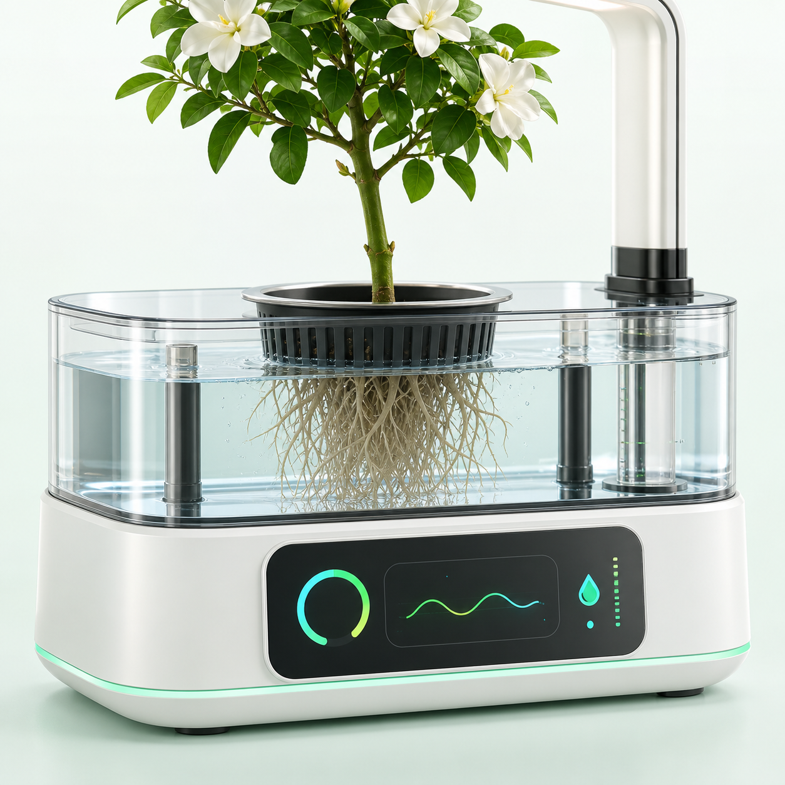

FloraMind
实时监测
在线
微型月季共生体
根区环境稳定，建议继续保持低流量循环。
92
生命力
本地联锁
暂无紧急告警
低液位、漏液和无流量保护均正常。
24 h 趋势
根区关键指标
今日养护
12-14 h 光周期
自动计划

远程操控
维生基座 C-01
ESP32-S3 已连接，最近同步 刚刚。
补光策略
营养生长
光谱与光周期
07:30 - 20:30
环境光充足时自动降功率，水温高于 28℃时优先降热负荷。
耗材智能预警
营养液与维护
校准记录
传感器可信度
第 38 天
新根诱导进入稳定期
本周白色新根增加，叶色稳定。EC 已从 1.2 提升到 1.4 mS/cm。
76%
阶段进度
成长曲线
株高与新根长度
实验日志
8-12 周观察
可核查记录
AI 病虫害诊断
拍照或选择症状
当前为演示诊断模型，正式版需接入真实训练数据与人工复核流程。
症状选择
根系与叶片
诊断结果
86%
根区低氧风险
DO 近期低于 6 mg/L 且水温偏高，建议先增强增氧、降低补光热负荷，并复查气石堵塞情况。
惜